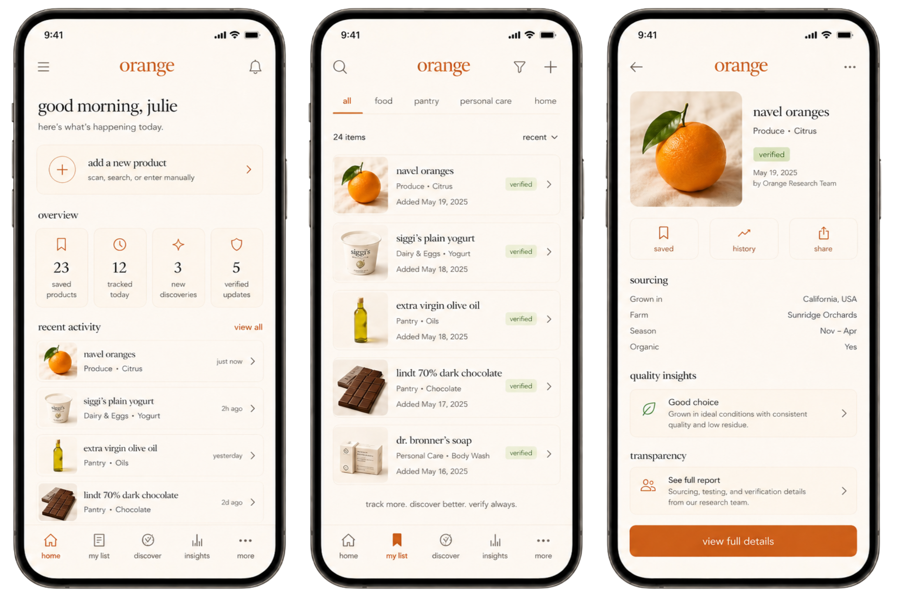

Orange
A community-built product library where users contribute everyday items, photos, visible codes and simple observations, then research review turns the best entries into trusted public resources.
Overview
Product Direction
Orange is a public product library built from user contributions. Instead of trying to launch with a complete database, the system begins with the products people actually upload, save, photograph and return to over time.
Users can add everyday items, attach images, note where they found them, capture visible identifiers like PLU codes, barcodes or batch numbers, and describe what they can actually observe.
As entries gain signal, the research layer can clean duplicates, add sourcing context, standardize metadata and apply a verified label to stronger public entries.
Core Experience
The experience is designed to feel like contributing to a shared archive, not posting to a social feed. Every product entry can become more useful over time as users add simple observations and the research team adds structure.
Library Logic
Features
Add Entries
Users create product entries by adding a name, category, photo, visible identifier, store, basic product details and any notes they want to remember.
Describe What Is Visible
For produce, users can quickly mark simple signals like fresh, sweet, juicy, bruised, ripe, lasted long or bought again.
Verify the Best
The research team can review high-signal entries, clean metadata, merge duplicates and add a verified label when the entry is stronger.
Evidence by Category
PLU + Sticker
Produce entries can use PLU codes, sticker photos, store details and simple freshness or taste observations.
Barcode + Batch
Skincare entries can use barcodes, batch or lot numbers, packaging photos, ingredient panels and expiration details when visible.
Label + Barcode
Packaged food, supplements and household items can use barcodes, ingredient labels, nutrition panels, lot codes and package photos.
Produce Example
User-Added Signals
The user layer stays intentionally simple. People only add what they can see, taste, remember or easily check from the label or store.
Research-Added Context
The research layer adds the deeper trust information later, without forcing normal users to fill out expert-level metadata.
Produce Identity
Produce Identifier
For produce, the PLU code becomes the anchor for the listing. Instead of creating vague duplicate entries like orange, organic orange or navel orange, Orange can connect the listing to the number already used on the produce sticker.
The image matters because it captures the real-world sticker, label or tag attached to that specific product. Users can upload the photo and enter the PLU so the entry is tied to an actual produce identifier.
Why It Matters
PLU-first entries keep the library cleaner. The same fruit can still collect many user observations, stores, photos and notes, but the core listing stays attached to a recognizable produce code.
Identifier System
One System, Different Evidence
Orange does not force one identifier across every product type. Each category can use the evidence that already exists on the item: PLU for produce, barcodes for packaged goods, batch numbers for skincare or supplements, and label photos when codes are not enough.
Research Role
Users provide visible evidence. The research layer can later use that evidence to clean duplicates, track packaging changes, connect repeated label patterns and add verified context when there is enough support.
Product Detail Example
Navel Oranges
A sample public produce entry showing how Orange can organize user-added observations into a clean, readable profile.
Visible Produce Signals
Research Review
What Research Adds
Trust Model
System Notes
Simple by Design
Orange avoids asking users to become experts. The user contributes quick observations and visible evidence, like stickers, labels, barcodes or batch numbers. The research layer handles the deeper context later.
This keeps the app easy enough to use while still giving the public library a path toward trust, structure and verification.
Interface System
The visual system blends soft gradients, muted neutrals, editorial typography and mobile-native spacing to make the public library feel calm, trustworthy and easy to revisit.